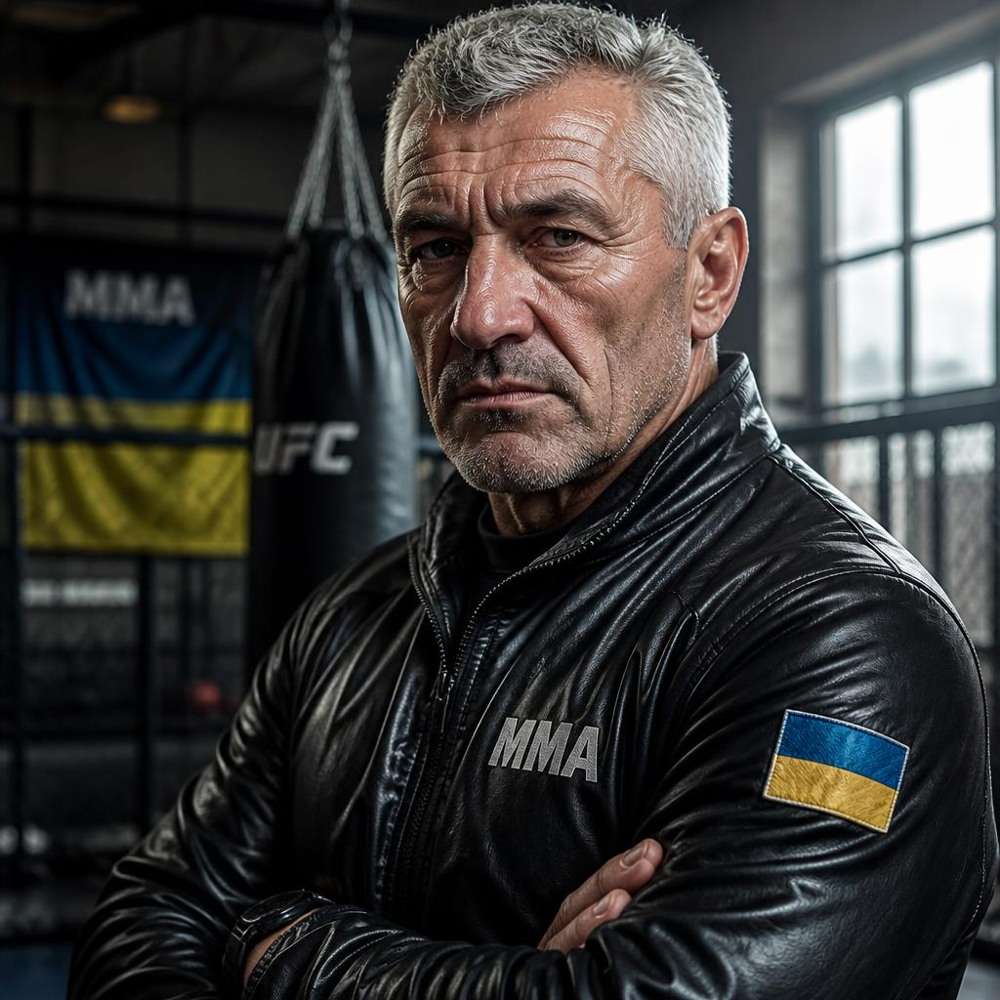
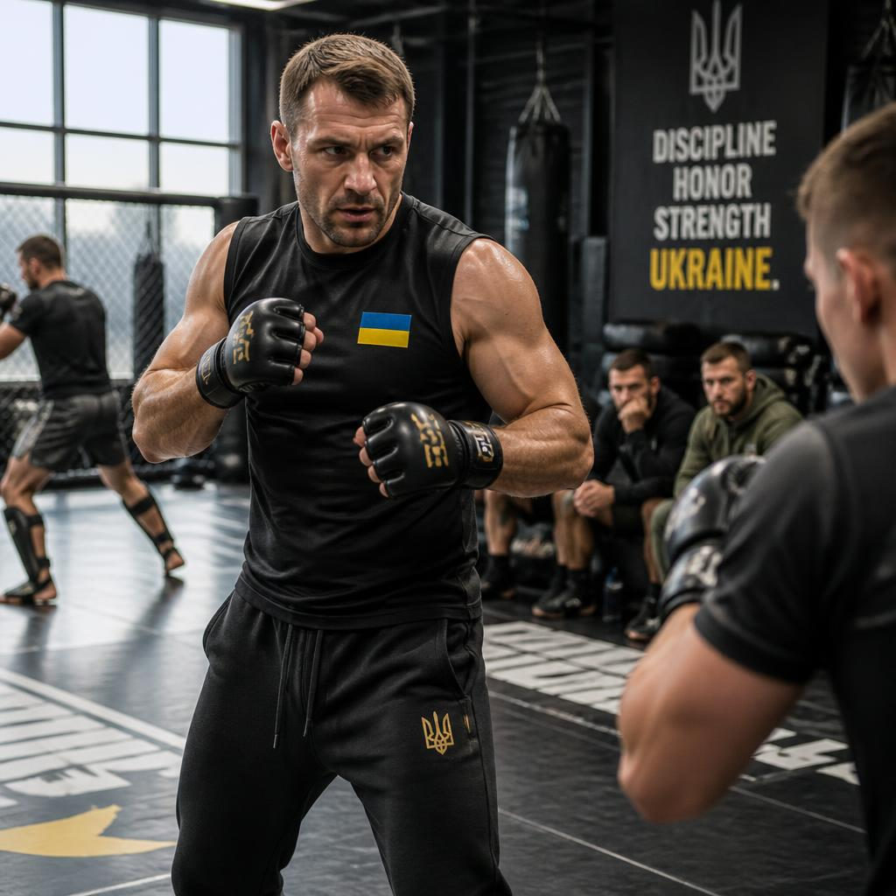
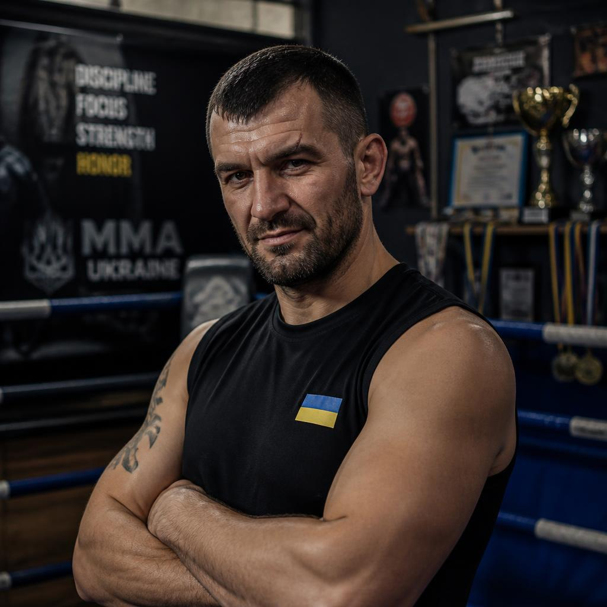
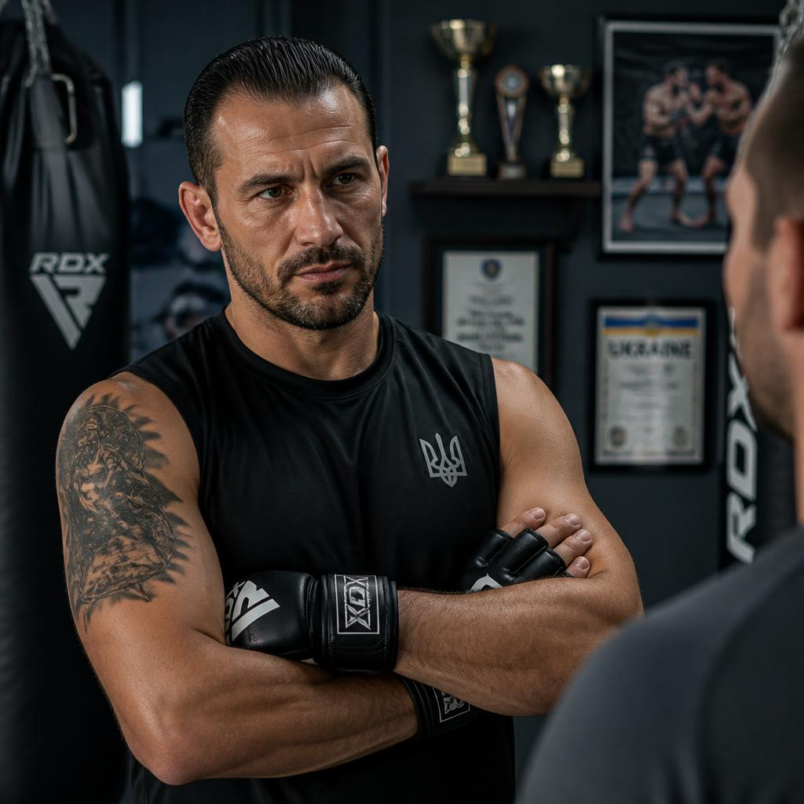
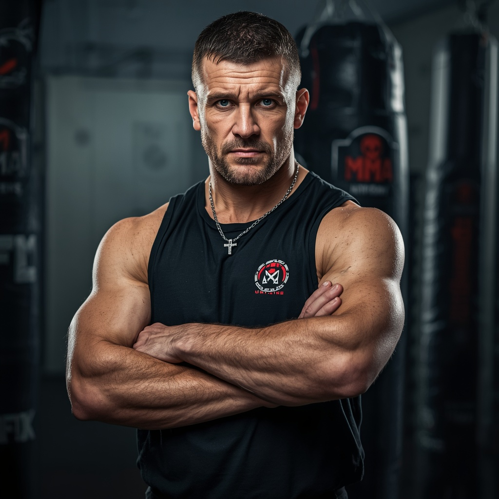
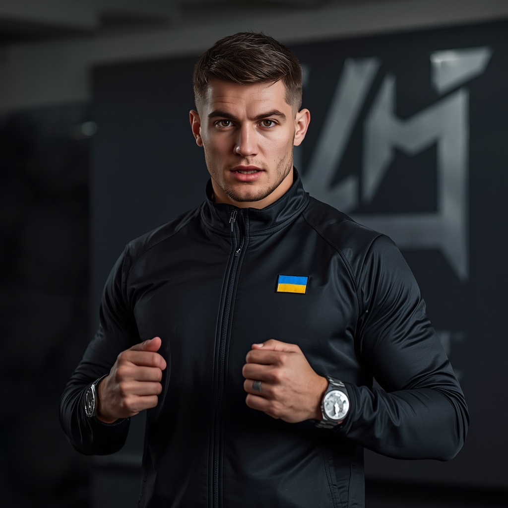
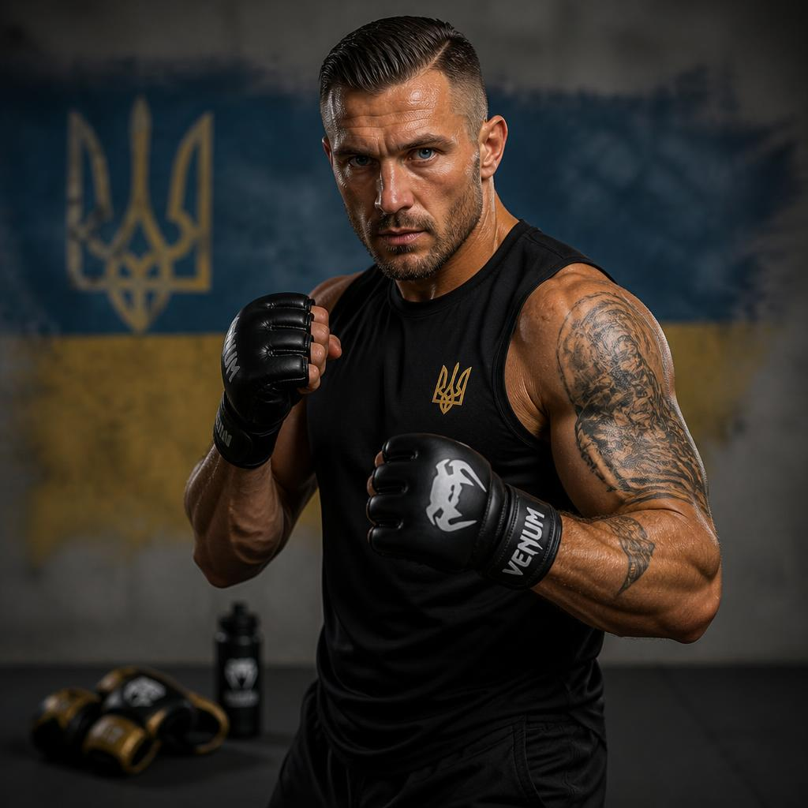

ММА — змішані єдиноборства, що стрімко розвиваються. Сучасні правила сформувалися в США у 1993 році з появою UFC. Поєдинки проходять у восьмикутній клітці — октагоні. Найпрестижніші турніри: UFC, Bellator та PFL. Найкращі бійці в історії — Джонс, Сен-П'єр, Джонсон. Матч обслуговує рефері у клітці та три бокові судді, діє система відеоповторів. ММА розвиває універсальність, силу, витривалість та характер.


Правила Бій триває 3 або 5 раундів по 5 хвилин. Змагаються 2 бійці, заміни заборонені. Мета — змусити суперника здатися від прийому, перемогти нокаутом або за очками. Дозволено бити руками, ногами, ліктями, колінами та боротися в партері. Заборонено бити в пах, по хребту та потилиці. Порушення — попередження або дискваліфікація. Якщо боєць не захищається, рефері зупиняє бій (технічний нокаут).

Вадим Залізняк — ММА. Досвід: 14 років. Спеціалізація: грэпплінг, больові та задушливі прийоми, джиу-джитсу. Досягнення: чорний пояс з БЖЖ, виховав чемпіона України з професійного ММА. Про себе: «Вчу переводити бій на землю і фінішувати суперника в партері будь-яким прийомом».

Олександр Громов — ММА. Досвід: 11 років. Спеціалізація: ударна техніка (страйкінг), клінч, робота ліктями. Досягнення: майстер спорту з тайського боксу, підготував 3 бійців для європейських промоушенів. Про себе: «Поставлю жорстку ударку, навчу розбивати оборону в стійці та домінувати в клінчі».

Руслан Ворон — ММА. Досвід: 9 років. Спеціалізація: граунд-енд-паунд (добивання в партері), тактичний малюнок бою. Досягнення: диплом академії спорту, розробив систему швидкого переходу від боротьби до ударів. Про себе: «Вчу вмикати агресивний пресинг і катувати суперника ударами на покритті».

Єгор Ягуар — ММА. Досвід: 7 років. Спеціалізація: захист від проходів у ноги (тэйкдаун дефенс), робота біля сітки. Досягнення: колишній професійний боєць ММА з рекордом 10-2, сертифікований тренер. Про себе: «Навчу контролювати суперника біля сітки та виходити з найважчих позицій».

Максим Спартак — ММА. Досвід: 6 років. Спеціалізація: функціональний тренінг, витривалість, ментальна підготовка бійця. Досягнення: сертифікат спеціаліста з кросфіту для єдиноборств, вивів двох юніорів у про-лігу. Про себе: «Прокачаю твоє дике кардіо, щоб ти міг рубатися в шаленому темпі всі 5 раундів».

Ілля Коршун — ММА. Досвід: 8 років. Спеціалізація: клінч у сітки, захист від тэйкдаунів, робота колінами. Досягнення: майстер спорту з бойового самбо, вивів юніорську команду в призери чемпіонату країни. Про себе: «Вчу повністю контролювати суперника в клінчі, розбивати захист колінами та диктувати свої правила в октагоні».

Артур Шарк — ММА. Досвід: 4 роки. Спеціалізація: базова універсальність, робота на лапах, кардіо-підготовка. Досягнення: призер міжнародних турнірів з панкратіону, засновник бійцівського клубу. Про себе: «Зведу твою борцівську та ударну техніку в єдину систему, навчу захищатися з нуля»..